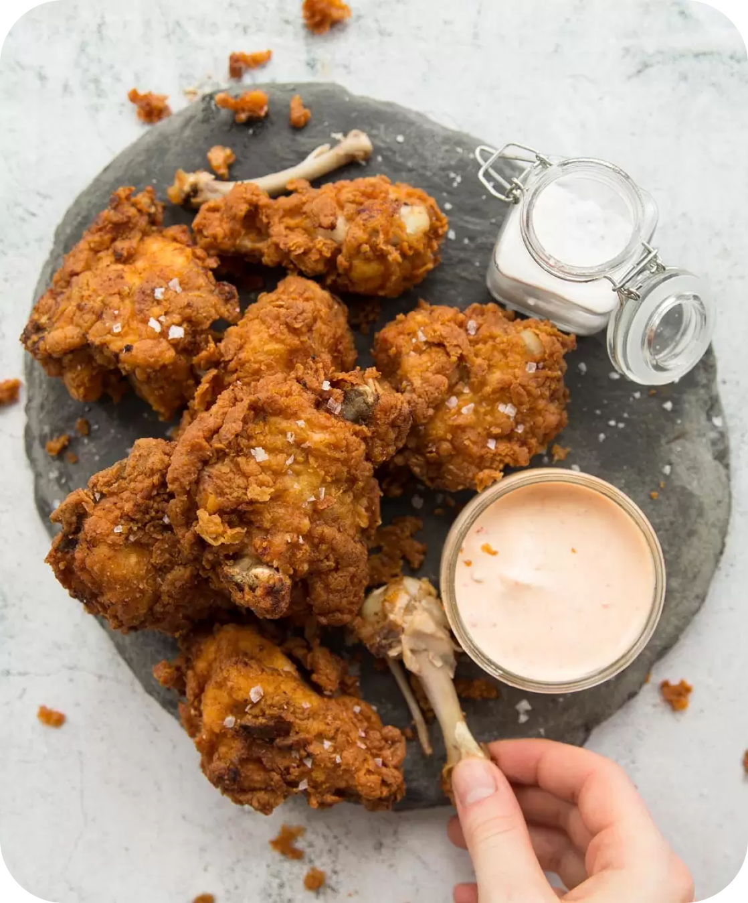

Learn how to make amazing Fried Chicken with the crispiest, most flavorfull crunchy outside with moist and juicy meat on the inside.

Plump up apricots – Cover the dried apricots with boiling water then leave for 30 minutes to plump up.
Brown chicken – Season the chicken with salt and pepper and brown the skin really well in a pan. This takes a good 8 to 10 minutes. Don’t shortcut this step! The browned skin adds a stack of flavour to the chicken, plus it leaves behind golden bits stuck on the pan (called “fond”) which imparts valuable flavour to the sauce.
Once the skin side is nicely browned, sear the other side for just 1 minute then remove. The chicken won’t be cooked through at this stage. We will finish cooking it in the sauce.
Sauté aromatics and spices – Sauté the onion and garlic, then cook off the spices briefly. Sautéing spices before adding liquids is a good tip for releasing more flavour from the spices. It certainly does for tagines!
Tagine sauce – Add the chickpeas, apricot, tomato, preserved lemon, stock and cinnamon stick. Stir, then bring it to a simmer.